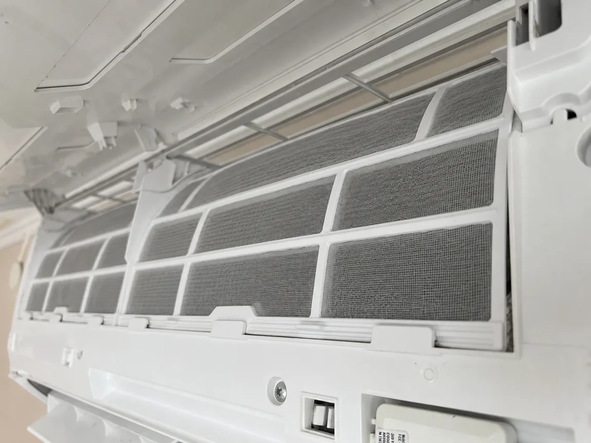
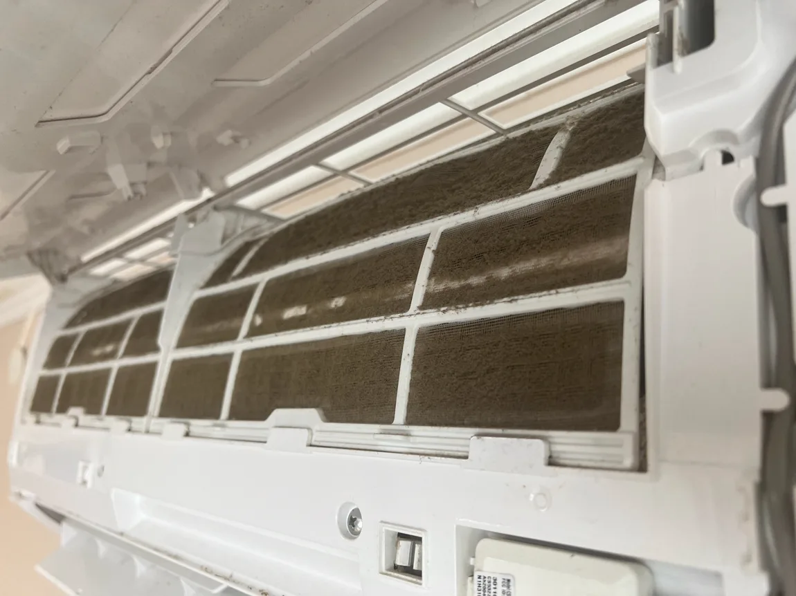
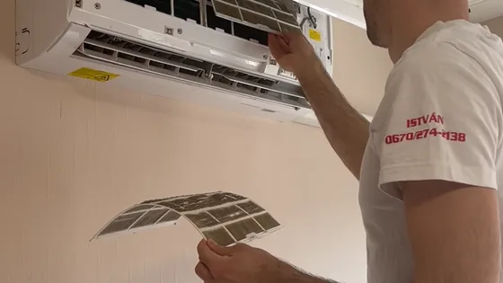
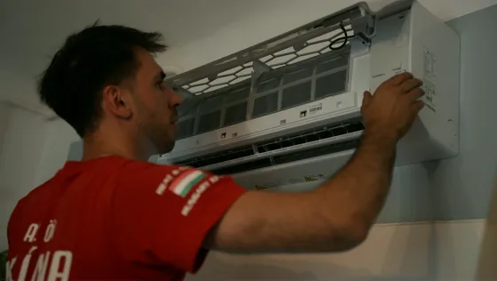
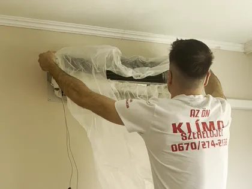

Mosózsákos tisztítás AJÁNLOTT
25 000 Ft
A gép köré védőzsák kerül, a szennyeződés a zsákba megy, nem a nappalidba.
Magasnyomású tisztítás, lerakódott por és penész eltávolítása, mélyreható gombátlanítás, ventilátor-henger mosás.


A klíma nem attól hűt rosszabbul, mert öreg. Attól, mert nem jut át rajta a levegő.
A gép köré védőzsák kerül, a szennyeződés a zsákba megy, nem a nappalidba.
Magasnyomású tisztítás, lerakódott por és penész eltávolítása, mélyreható gombátlanítás, ventilátor-henger mosás.

Azt hozza rendbe, amin a levegő átmegy. Ha a gép nem szagos, csak poros, sokszor elég.
Porszűrők és burkolat kimosása, fertőtlenítés. A hőcserélő átmosása a mosózsákos tisztítás része.
Nem tudod eldönteni? Ha szagot érzel, mosózsákos kell. Ha csak gyengült a gép, az alap tisztítás is sokszor elég. Csak hűtésre használt gépnél évente egyszer, fűtésre is használt gépnél évente kétszer érdemes tisztíttatni. A gyártói jótállás feltételei között is jellemzően ott van a számlával igazolt karbantartás; a pontos gyakoriságot a gép jótállási jegye adja meg.
Szezon előtt vagy után, évente egyszer, ha csak hűtesz vele; ha fűtesz is, mindkét szezon előtt. Hőségriadóban mindenki egyszerre hív, ezért van sor. Tavasszal és ősszel ugyanez a munka nem torlódik.
A porszűrőket havonta te is kimoshatod langyos vízzel. A hőcserélő és a tálca viszont szakembert kíván, és a hűtőköri munkához F-gáz képesítés kell.
Két tisztításunk van, és nem mindegy, melyik kell a te gépednek. Ezek a jelek segítenek dönteni.
Mosózsákos. A szag a hőcserélőn és a ventilátorhenger réseiben ülő lerakódásból jön. Azt spray nem viszi le, csak az átmosás.
Legtöbbször mosózsákos. A lamellák közét eltömte a por, a levegő nem jut át rajtuk. Ha a gép minden évben kap karbantartást és csak enyhén poros, az alap tisztítás is elég lehet.
Mosózsákos. A csöpögést legtöbbször az eldugult kondenztálca vagy a kondenzvíz-elvezetés okozza. A mosásnál a tálcát és az elvezetést is átmossuk.
Mosózsákos. Ami kint látszik, annak a nagyja bent van, a hengeren és a hőcserélőn.
Ilyenkor elég az alap: szűrők, burkolat, fertőtlenítés. Ha viszont két évnél régebben volt utoljára tisztítva, vagy még sosem, mosózsákosat javaslunk, mert annyi idő alatt a hőcserélőben összegyűlik a lerakódás.
A mosózsákos tisztítás így zajlik, lépésről lépésre.
Áramtalanítjuk a gépet. A falat a beltéri egység körül és alatta a bútort letakarjuk fóliával.
Levesszük a burkolatot, kivesszük a porszűrőket. A szűrőket és a burkolatot külön elmossuk.
A beltéri egység köré egy zsákot húzunk, aminek az alján tömlő van. Amit lemosunk, azt a zsák felfogja, és a tömlőn keresztül egy edénybe vezeti. Nem megy se a falra, se a bútorra.
A hőcserélő lamellái olyan sűrűn állnak, hogy közéjük kézzel nem lehet benyúlni. Ezért nagy nyomású vízsugárral mossuk át a lamellákat és a ventilátorhengert, aminek a réseiben a fekete lerakódás ül. Átmossuk a kondenztálcát és a kondenzvíz-elvezetést is, hogy ne csöpögjön.
A megtisztított felületeket fertőtlenítjük, hogy a penész ne induljon újra ilyen hamar.
A kültéri egység lamelláiról eltávolítjuk a pollent és a leveleket. Visszaszereljük a szűrőket és a burkolatot, elindítjuk a gépet, és megnézzük, hogy rendesen hűt-e, és elfolyik-e a kondenzvíz. A szennyvizet a lefolyóba öntjük, a fóliát összeszedjük.
Nem katalógusképek. Ez a mosózsákos tisztítás két pillanata.

Levesszük a burkolatot, kivesszük a porszűrőket. A szűrőket és a burkolatot külön elmossuk.
A képen: a szerelő nyitja a beltéri egység előlapját, a szűrők szabadon láthatók.

A beltéri egység köré egy zsákot húzunk, aminek az alján tömlő van. Amit lemosunk, azt a zsák felfogja, és a tömlőn keresztül egy edénybe vezeti. Nem megy se a falra, se a bútorra.
A képen: a szerelő a mosózsákot igazítja a beltéri egységre, a fólia már a gép körül van.
Hűtéskor a hőcserélő hideg, ezért a szoba levegőjének párája lecsapódik rajta. Ugyanez a levegő port is hoz, és a por megtapad a nedves felületen. Pára plusz por: ez a lerakódás, és ezen indul meg a penész meg a baktérium. A szag onnan jön.
A másik fő forrás a ventilátorhenger. A rései között a nedves por fekete réteggé áll össze, és a henger minden bekapcsoláskor ezen a rétegen keresztül fújja feléd a levegőt.
Magától nem múlik el, mert az ok minden hűtésnél újratermelődik: a hőcserélő újra nedves lesz, a lerakódás újra nedvességet kap. A bolti spray a szagot egy időre elfedi, de a réteget nem viszi le. Amíg a lerakódás bent van, a szag visszajön.
Csak hűtésre használt gépnél évente egyszer, szezon előtt vagy után. Ha fűtesz is vele, évente kétszer ajánlott, a hűtési és a fűtési szezon előtt. Tavasszal és ősszel nem torlódik a munka, hőségriadóban mindenki egyszerre hív.
Gépenként nagyjából egy-másfél órával számolj. A gép állapotától függ: erősen koszos gépnél tovább tart a mosás. Időpont-egyeztetéskor megmondjuk, mennyi időre számíts, és egy kiszállással végigcsináljuk, nem kell kétszer otthon lenned.
Nem. A falat és a bútort letakarjuk, a lemosott szennyeződést a zsák felfogja és tömlőn vezeti egy edénybe. A végén a szennyvizet a lefolyóba öntjük, és úgy hagyjuk ott a gépet, hogy csak a tisztaságán látszik, hogy ott jártunk.
A szűrőt havonta te is kimoshatod langyos vízzel, és érdemes is. De az csak a szűrő. A hőcserélő és a ventilátorhenger mögötte ugyanolyan koszos marad, márpedig a szag és a gyenge hűtés onnan jön. Azokhoz szétszedés és nyomás kell.
A mosás leviszi a lerakódást, a fertőtlenítő pedig a megtisztított felületeken elpusztítja a visszamaradt penészt és baktériumot. Önmagában, mosás nélkül keveset ér: koszos felületre fújva a réteg alja marad.
Igen. A kültéri lamelláit pollen és levél tömíti el, attól a gép többet fogyaszt és kevesebbet hűt. A mosózsákos tisztításnál a kültérit is átnézzük és megtisztítjuk.
Öt mező, és visszahívunk. A kiszállás ingyenes.
Alap tisztítás 15 000 Ft, mosózsákos mélytisztítás 25 000 Ft. Mikor melyik kell, és mi van benne.
Évente egyszer vagy kétszer? A használat dönti el.
Miért lesz poshadt szagú a klíma, miért nem segít a bolti spray.
Miért folyik a víz a beltéri egységből, mit tudsz otthon megnézni.
Mosózsákos tisztítás 25 000 Ft, alap tisztítás 15 000 Ft.